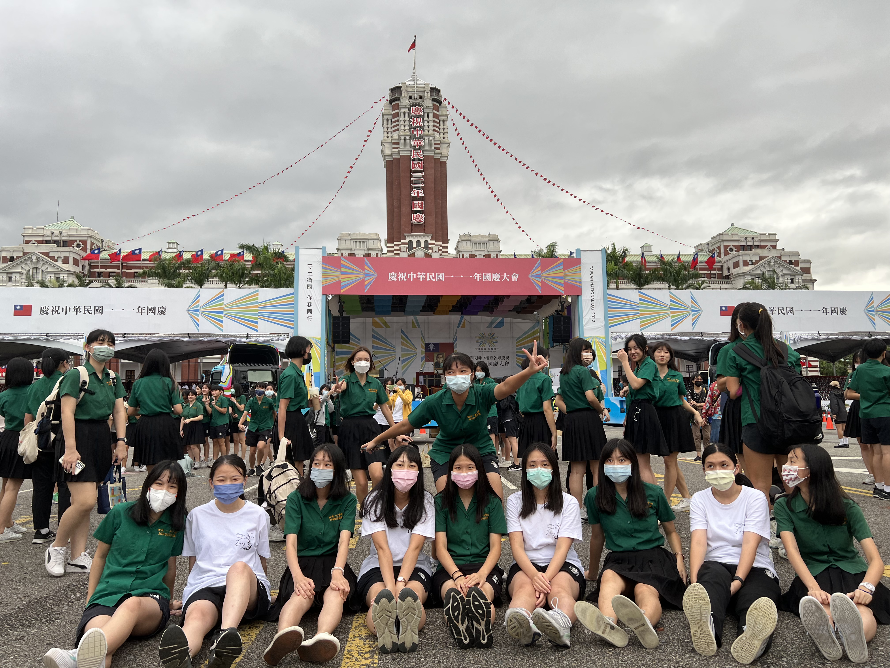
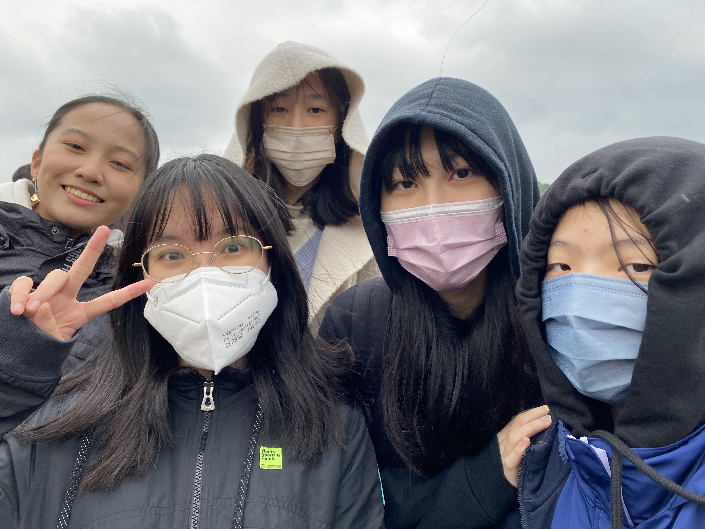
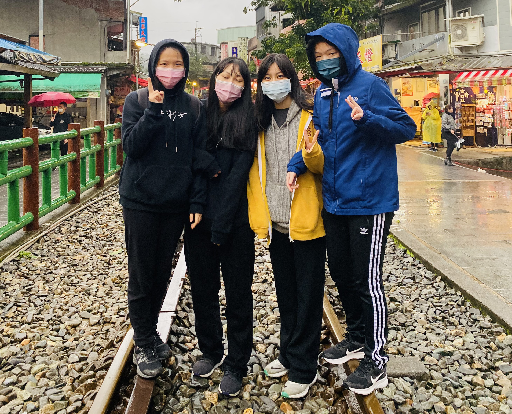
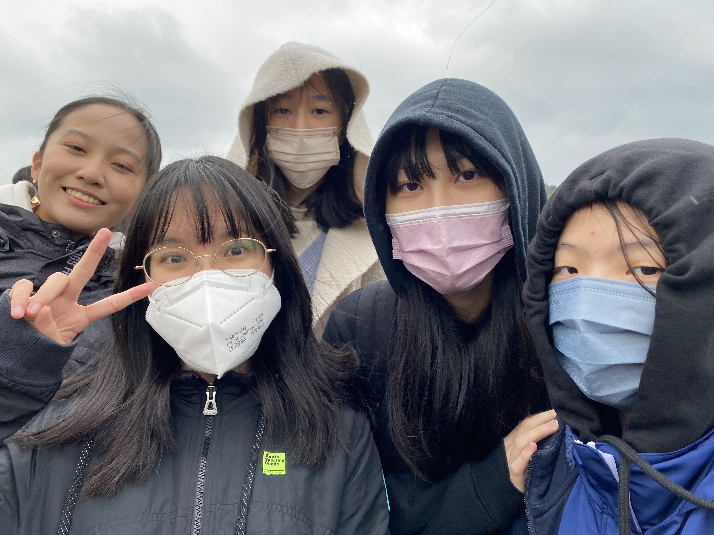
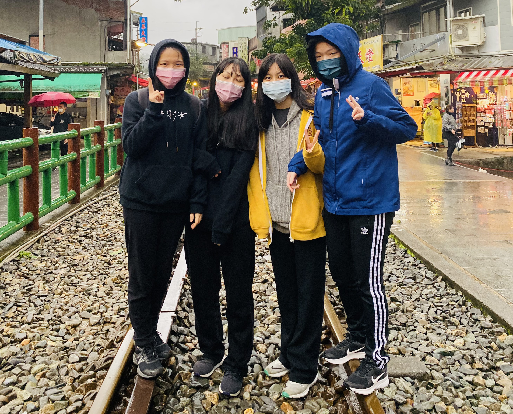
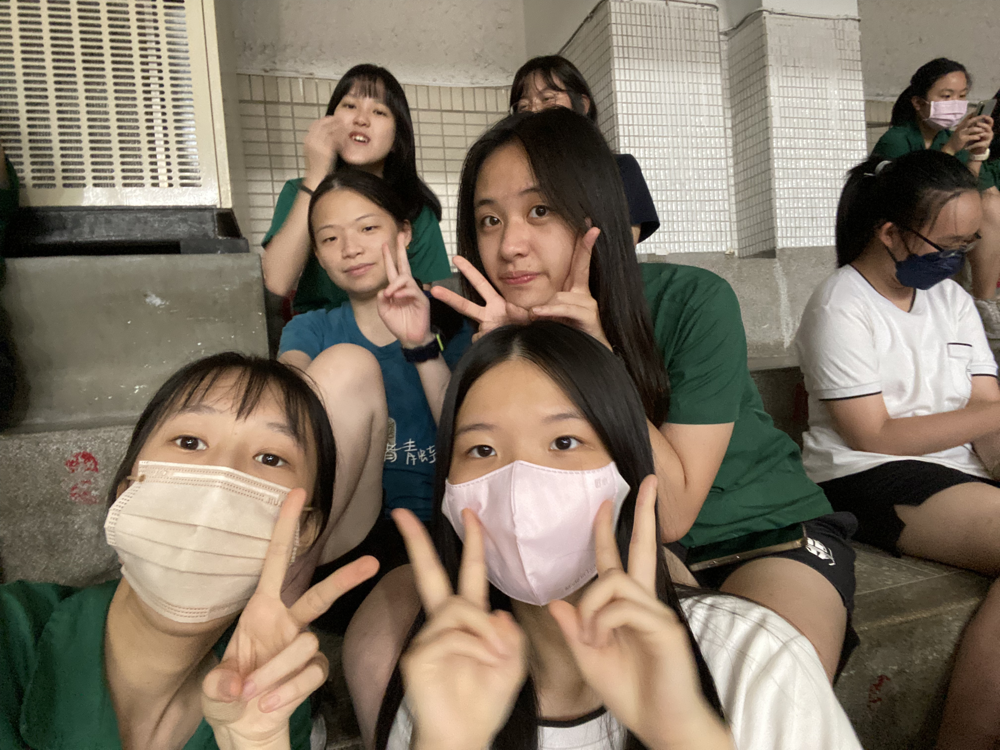
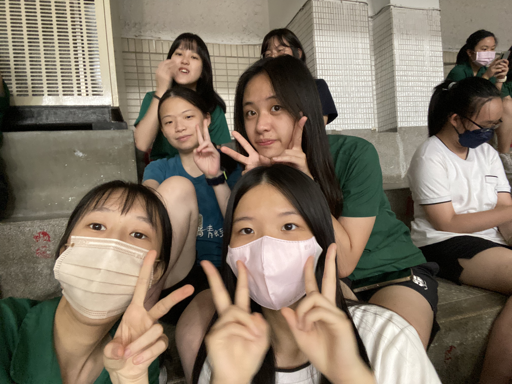
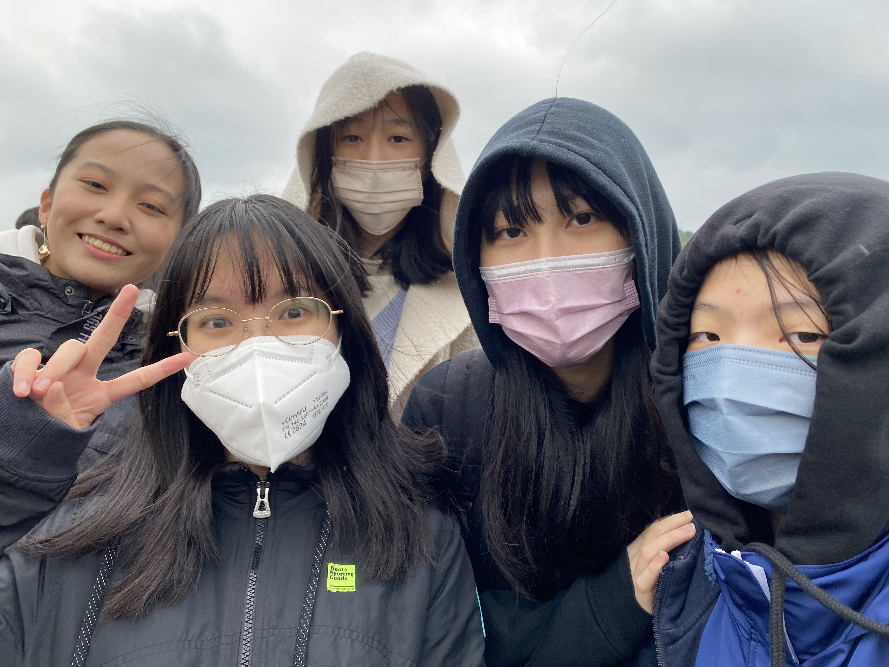
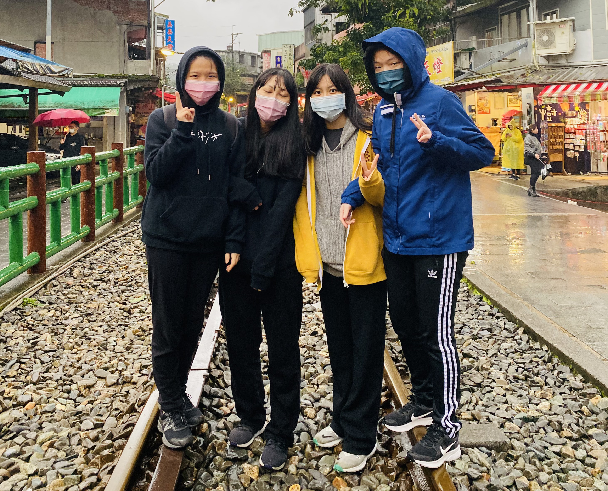
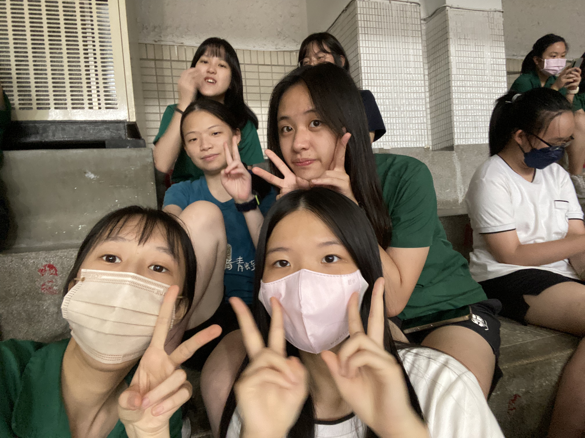

High School Life

 




 




What was my life like in high school?
Studying and Exams
One of the most important things is studying.
Studying and exams took up nearly half of my time.
Working hard with my classmates was a happy time.
Science Fair Competitions
Besides studying and exams, I was busy preparing for and participating in math science fairs.
Participating in domestic and international competitions, science exhibitions, and seminars were great nourishment for me.
The science fair is a very important memory for me.
I'm very grateful to have had this time in high school.
After Class
The time spent with classmates is an unforgettable memory.
I'm glad to have made a group of like-minded friends.
We are still good friends now.